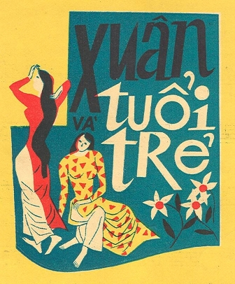

Cứ mỗi mùa Xuân đến, chúng ta lại nghe những khúc ca mừng xuân văng vẳng từ mọi nhà. Nhạc Xu

ân chiếm một phần lớn trong âm nhạc VN, nó là món ăn tinh thần của những người có cuộc sống nội tâm, xem âm nhạc như là một phần đời của mình. Quả thật vậy, nếu ngôn ngữ là những kí hiệu để giúp con người hiểu nhau thì âm nhạc là một loại ngôn ngữ kì diệu. Nó làm cho con người gần nhau, hòa nhập nhau trong sự đồng cảm.Nhạc khúc mùa Xuân như một cánh rừng, ta tha hồ chọn tùy vào gu của mỗi người. Tôi thích những bản nhạc Xuân có âm hưởng nhẹ nhàng, vui tươi. Nếu kể ra thì nhiều lắm. Chúng ta không thể không nhắc tới những bài hát truyền thống có tính kinh điển như bài "Ly rượu mừng" của NS Phạm Đình Chương. Bạn hãy nhìn xem, bất kỳ một đĩa nhạc Xuân nào trước 75 và bây giờ đều không thể thiếu nó. Ngay cả những buổi trình diễn văn nghệ mùa Xuân thì bài đầu tiên thường vẫn là "Ly rượu mừng". NS Phạm Đình Chương có lần tâm sự, nếu mọi người, mỗi lần ai đó nghe bài hát "Ly rượu mừng" của tôi mà tặng thưởng cho tôi một đồng US thì tôi đã thành tỉ phú. Chúng ta có thể so sánh bài "Ly rượu mừng" với bài "Happy new year" do ban nhạc Abba trình bày!
Bên cạnh bài “Ly rượu mừng” chúng ta lại có thêm bài “Xuân và tuổi trẻ” của nhạc sĩ La Hối. Bài hát nầy không thua gì bài “Ly rượu mừng” với số lượng người nghe cũng như sự ái mộ. Bài “Xuân và tuổi trẻ” luôn có mặt trên các đĩa nhạc xuân cũng như chương trình văn nghệ hát mừng Xuân”. Chúng ta biết rằng nhạc sĩ La Hối là người gốc Hoa. Ông sinh ra ở Hội An. Ông thuộc nhóm kháng chiến và chúng ta càng ngạc nhiên hơn khi biết rằng nhà văn Thế Lữ đã viết lời cho bài nhạc của La Hối và giữ luôn tên bài nhạc: "Printemps et la jeunesse" - bài hát “Xuân và tuổi trẻ”:
“Ngày thắm tươi bên đời xuân mới. Lòng đắm say bao nguồn vui sống. Xuân về với ngàn hoa tươi sáng. Ta muốn hái muôn ngàn đóa hồng. Ngày thắm tươi bên đời xuân mới. Lòng đắm say bao nguồn vui sống. Xuân về với ngàn hoa tươi sáng. Ta muốn luôn luôn cười với hoa.
Xuân thắm tươi, én tung bay cao tít trời. Vui sướng đi, cao tiếng ca mừng vui reo. Đừng để lòng thổn thức tình mê đắm. Ta trẻ vui, ta trẻ vui đời xuân thắm tươi
Xuân thắm tươi, én tung bay cao tít trời. Vui sướng đi, cao tiếng ca mừng reo. Đừng để lòng thổn thức tình mê đắm. Ta trẻ vui, ta trẻ vui đời xuân thắm tươi. Vui sướng đi cho đời tươi sáng. Vui sướng đi cho lòng thêm tươi. Ta hát ca đón mừng xuân mới.Ta hát ca cho lòng thêm hăng hái…”
Các câu chữ gợi hình ảnh tươi vui, yêu đời đượm màu sắc tươi thắm: thắm tươi, đắm say, én tưng bay cao tít, vui sướng, tiếng ca mừng reo, … và đặc biệt sự lặp lại các câu từ: vui sướng đi, ta hát ca, tiết xuân, …lồng trong tiếng nhạc với giai điệu valse sôi động làm cho ta bị lôi cuốn trong sự hân hoan đón mừng xuân mới.
Vẫn không quên được bài hát “Em đến thăm anh đêm ba mươi” lời của Nguyễn Đình Toàn, nhạc sĩ Vũ Thành An phổ nhạc. Bài hát làm tôi bồi hồi xúc động. Tết sắp đến và tình yêu khởi đầu bằng sự hẹn hò, em đến thăm anh đêm ba mươi. Nhớ nghe, có người phu quét đường với những chiếc lá vàng làm bằng chứng. Có sự rộn ràng nào bằng sự thổn thức vì đợi chờ: "Em đến thăm anh đêm ba mươi. Còn đêm nào vui bằng đêm ba mươi. Anh nói với người phu quét đường. Xin chiếc lá vàng làm bằng chứng yêu em. Tay em lạnh để cho tình mình ấm. Môi em mềm cho giấc ngủ anh sâu. Sau giao thừa xanh trong đôi mắt ngoan. Trời sắp tết hay lòng mình đang tết..."
Nhắc đến những bản nhạc xuân một thời mà không nói đến sự đóng góp của những bản nhạc có dấu vết của chiến tranh, tâm sự của những người lính xa nhà, đón tết ở một chốt nào đó của chiến trường, bên giây thép gai, bên hàng phòng ngự thì thật là thiếu sót. Chúng ta mang ơn những người lính đã canh gác ngày đêm cho chúng ta hưởng những mùa xuân tươi đẹp trong khi họ phải ở trong rừng sâu, nơi giao thông hào, tuyến phòng ngự, …. Bài hát phiên gác đêm xuân của NS Đại tá Nguyễn Văn Đông làm chúng ta ray rứt đau một nỗi đau của những người lính đêm giao thừa, nghe tiếng súng ngỡ rằng tiếng pháo, nhìn hoa rơi trên báng súng ngỡ rằng pháo tung bay: “Đón Giao Thừa một phiên gác đêm. Chào xuân đến súng xa vang rền. Xác hoa tàn rơi trên báng súng. Ngỡ rằng pháo tung bay, ngờ đâu hoa lá rơi. Bấy nhiêu tình là bao nước sông. Trời thương nhớ cũng vương mây hồng. Trách chi người đem thân giúp nước. Đôi lần nhớ bâng khuâng, gượng cười hái hoa xuân …” rất nhiều bản nhạc xuân mang dấu vết chiến tranh, nói lên nỗi lòng của người lính xa nhà các bạn ha, như bài hát của Trịnh Lâm Ngân: “Mùa Xuân của mẹ”: “…Mẹ ơi hoa cúc hoa mai nở rồi. Giờ đây đời con đang còn lênh đênh. Đèo cao gió lộng ngày đêm bạt ngàn. Áo trận sờn vai bạc màu. Nhìn xuân về lòng buồn mênh mang …”
Những bài hát mùa Xuân của các nhạc sĩ tiền chiến và một số NS miền Bắc di cư vào miền Nam thì không thể chê được. Tôi vẫn xúc động quá đổi mỗi khi nghe các bản nhạc Xuân của Phạm Duy. Các bài "Xuân ca", "Hoa Xuân", "Đêm Xuân" làm chúng ta nao lòng, yêu quá thiên nhiên và con người. Bên cạnh có NS Văn Phụng với "Xuân họp mặt", "Xuân miền Nam", "Hát mừng Xuân mới" quá tuyệt với. Nhạc Văn Phụng làm chúng ta gần gũi nhau hơn, yêu đời, yêu người. Bài "Gió mùa Xuân tới" của Hoàng Trọng phác họa cảnh tượng mùa Xuân làm ta nôn nao, sốt ruột một cách kỳ lạ...
Rất nhiều, rất nhiều bản nhạc Xuân hay bạn ạ! Thế nhưng, có một bài hát mà đã biết bao nhiêu mùa Xuân đi qua đời tôi, biết bao nhiêu lần tôi nghe, vẫn cảm thấy bản nhạc thu hút tôi, bắt tôi nghe từng ca từ, lôi cuốn theo giai điệu. Lời bài hát rất dễ thương, tình yêu của anh đã cho em, khác nào anh cho em mùa xuân. Em yêu anh và em yêu đất nước của chúng ta với "đất mẹ đầy cỏ lúa" với lũy tre làng, con kênh xanh xanh,...
bài "Anh cho em mùa Xuân" thơ của Kim Tuấn. Nhạc của Nguyễn Hiền là một lời tự tình của tình yêu tràn ngập trên quê hương với đồng lúa, với con kênh đầu làng, “… Anh cho em mùa xuân. Nụ hoa vàng mới nở, Chiều đông nào nhung nhớ
Đường lao xao lá đầy. Chân bước mòn vĩa phố. Mắt buồn vin ngọn cây. Anh cho em mùa xuân. Mùa xuân này tất cả. Lộc non vừa trẩy lá. Lời thơ thương cõi đời. Bầy chim lùa vạt nắng. Trong khói chiều chơi vơi
Đất mẹ đầy cỏ lúa. Đồng xanh xa mấy mùa. Ngoài đê diều căng gió. Thoảng câu hò đôi lứa. Trong xóm vang chuông chùa. Trăng sáng soi liếp dừa. Con sông dài mấy nhánh. Cát trắng bờ quê xưa
Anh cho em mùa xuân. Trẻ nô đùa khắp trời. Niềm yêu đời phơi phới. Bàn tay thơm sữa ngọt. Giải đất hiền chim hót. Mái nhà xinh kề nhau
Anh cho em mùa xuân. Đường hoa vào phố nhỏ. Nhạc chan hòa đây đó. Tình yêu non nước này. Bài thơ còn xao xuyến. Rung nắng vàng ban mai
Anh cho em mùa xuân. Nhạc thơ tràn muôn lối.
Ca từ và giai điệu nhẹ nhàng như bài ca dao của mẹ. Bài hát đưa ta trở về cội nguồn. Ta như trẻ thơ được tắm trong dòng suối mát, có tình yêu của em có tình thương của mẹ,...
Tôi vẫn thắc mắc, lòng nhủ thầm:
- Tại sao lại "anh cho em mùa xuân" mà không ngược lại?
Và biết đâu khi em đọc bài viết này, em lại trả lời tôi:
- Không anh ạ, anh cho em mùa Xuân!
Nhắc đến những bản nhạc Xuân là gợi nhớ trong tôi những kỷ niệm. Kỷ niệm của tôi về những mùa xuân, những cái tết, cũng là kỷ niệm của chúng ta. Tôi muốn nói đên thế hệ của những người sinh ra và lớn lên, trưởng thành trước 75. Đó là vùng đất hứa, nơi chốn hiền hòa, môi trường trong lành, tự do mà chúng ta đã sống, đã thừa hưởng được. Nhạc Xuân gợi cho tôi những cái tết đầm ấm, hạnh phúc bên người thân, trong một mái nhà và là gạch nối với những người khác, cộng đồng, tha nhân. Nghe những bản nhạc xuân: Gió mùa xuân tới, Ly rượu mừng, Xuân và tuổi trẻ, Anh cho em mùa Xuân, … Sao tôi bồi hồi xúc động quá. Tôi nhớ chiều 30 tết, cha tôi đang cúng lạy trước bàn thờ, tôi mở nhạc rất nhỏ cuốn băng nhạc xuân của Phạm Mạnh Cương, văng vẳng bài “Gió mùa xuân tới” trong khi tiếng pháo nổ vang lừng và anh tôi mỉm cười bằng ánh mắt thương yêu. Căn phòng tỏa mùi thơm của trầm hương trên bàn thờ và cha tôi, ông nhìn tôi với nụ cười bao dung, không nhăn nhó vì tôi mở nhạc khi ông đang cúng. Tôi nhớ về kỷ niệm của mùa xuân như nhớ về một hạnh phúc, một niềm vui đã không còn. Ôi nhớ lắm anh Hiền ơi, nhớ lắm cha ơi. Nhớ! nhớ mệ nội, nhớ các anh chị trong đêm giao thừa. Nhớ cha mở nắp hộp đựng tiền mới lì xì cho mệ nội (mẹ) và cho chúng tôi (các con). Có niềm vui nào lớn hơn!
Nghe nhạc Xuân bằng băng đĩa, nghe qua các đài phát thanh Sài Gòn, Huế, Đà Nẵng,...cùng với tiếng pháo nổ vang rền với hình ảnh thằng bé lon ton chạy đi nhặt pháo rơi, pháo xì là những kỷ niệm ngọt ngào nhất, đằm thắm nhất.
Đã hơn nửa thế kỷ đi qua trên mái tóc của tôi. Cứ mỗi mùa xuân tới tôi lại nghe những bản nhạc Xuân. Vẫn là những bài hát quen thuộc, vẫn là những giọng ca một thời: Thái Thanh, Khánh Ly, Nhật Trường, Thanh Lan, Mai Hương, Duy Trác, Anh Khoa, Ánh Tuyết, Trần Ngọc, Quang Minh, Sĩ Phú, Tuấn Ngọc, Duy Quang, …Những bản nhạc Xuân, những giọng ca đó đã thẩm thấu tâm hồn tôi, cho tôi những hồi ức về những mùa xuân không bao giờ tìm thấy lại, không bao giờ có được. Phải không các bạn?